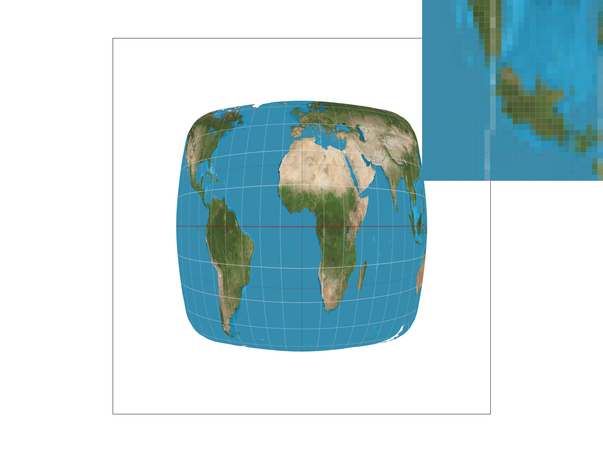
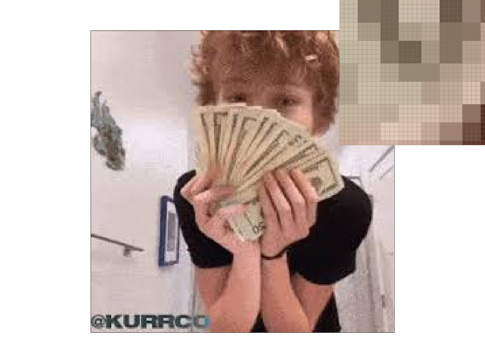

CS184/284A Spring 2025 Homework 1 Write-Up
Overview
In this homework, I implemented a rasterizer from scratch, starting with basic triangle rasterization and building up to supersampling, transforms, barycentric color interpolation, texture mapping with pixel sampling, and mipmap-based level sampling. Along the way I also implemented an incremental edge function optimization for faster rasterization.
The most interesting thing I learned was how much antialiasing quality can be improved just by sampling more carefully — whether by supersampling sub-pixels, blending neighboring texels bilinearly, or choosing the right mip level. Each technique targets a different source of aliasing and they compound nicely when combined.
Task 1: Drawing Single-Color Triangles
Walk through how you rasterize triangles in your own words.
To begin, we need to figure out the bounding box of each triangle. This is the smallest possible rectangle that contains all three vertices of the triangle. To do so, I took the minimum and maximum of the x and y coordinates. Then, I clamped the box to the frame buffer dimensions (this ensures that I'll never accidentally access out of bounds memory).
Next, for each pixel in the bounding box, we need to test whether its center is within the triangle. I did so using the edge function test, inputting the coordinates (x + 0.5, y + 0.5) into the formula E(px, py) = (xb - xa) * (py - ya) - (yb - ya) * (px - xa). A point is within a triangle if it is on the correct side of all three triangle edges. I implemented a simultaneous check for both counterclockwise and clockwise triangles by computing the signed area of each triangle. Regardless of whether a triangle is clockwise or counterclockwise, if all three values are ≥ 0, then the point is inside of the triangle. If a sample passes the test, fill_pixel writes the color.
Explain how your algorithm is no worse than one that checks each sample within the bounding box of the triangle. The bounding box of the triangle is defined as the smallest rectangle that can be drawn whilst ensuring that the entire triangle is within it.
My algorithm uses bounding box sampling. It can't be worse because the bounding box defines the outer loop. Every pixel that is tested is within the box. Furthermore, the amount of computational work done per pixel is minimized, since we do not have to recompute each edge function from scratch for each sample.
Show a png screenshot of basic/test4.svg with the default viewing parameters and with the pixel inspector centered on an interesting part of the scene.
Extra Credit — Incremental Edge Functions
I avoided recomputing each edge function for each sample by precomputing the partial derivatives before the inner loop. For every sample point (px, py), the unoptimized approach has to compute the edge function three times (with result e0). This means it'll perform two multiplications and three additions per edge, three times (six multiplications and 9 additions total). Since the edge function is linear, if we change px by a fixed amount, then e0 should also change by a fixed amount. By computing the partial derivatives (sedge01x and sedge01y), we can just add a constant amount to e0.
My implementation works by taking the initial edge function value at the very first sample point: (xmin + 0.5/√rate, ymin + 0.5/√rate). Then, every other sample's value is computed by adding the precomputed partial derivatives. The loop never has to call on the entire edge function again.
I've set up the loops so that each increments by a constant amount:
- The outermost loop increments
e0_pixel_row += sedge01y(one pixel down). - The next inner loop increments
e0_pixel += sedge01x(one pixel right). - The next inner loop increments
e0_sj += sub_sedge01y(1/√rate of a pixel down). - The innermost loop increments
e0 += sub_sedge01x(1/√rate of a pixel right).
Timing Comparison:
| Test | Optimized (ms) | Naive (ms) | Speedup |
|---|---|---|---|
| test4 | 0.500333 | 0.543667 | 1.09× |
| test6 | 0.543667 | 1.15304 | 2.12× |
Task 2: Antialiasing by Supersampling
Walk through your supersampling algorithm and data structures. Why is supersampling useful? What modifications did you make to the rasterization pipeline in the process? Explain how you used supersampling to antialias your triangles.
Supersampling helps us deal with jaggies. Without it, each pixel is either on or off. Instead of just checking whether the pixel center is within a triangle, supersampling enables us to check how much of a pixel is inside of a triangle. Pixels that are only partially within a triangle get assigned an intermediate color. This is what smooths the jaggies (the antialiasing).
The primary data structure at play is sample_buffer. It is defined as std::vector<Color>. Its size = width × height × sample_rate. Each pixel occupies a block of sample_rate slots: sample_buffer[(y * width + x) * sample_rate + s]. Each slot represents one sub-sample measurement at a specific point inside the pixel. At sample_rate = 1, each pixel has 1 slot. At sample_rate = 4, each pixel has 4 slots. Each slot stores the triangle's color (if inside the triangle) or white (the background color). Slots are kept separate because multiple triangles can contribute to the final color of a pixel.
I made the following modifications to the pipeline:
- Instead of just checking one sample per pixel,
rasterize_triangle()now testssample_ratesub-samples in a uniform grid. The dimensions of the square grid are defined by √rate. Instead of going straight throughfill_pixel, each hit now writes to its individual slot insample_buffer. fill_pixel()fills allsample_rateslots of a pixel with the same color so they resolve correctly (for points and lines that don't supersample).- At the end of each frame,
resolve_to_framebuffer()averages allsample_ratesub-samples into a single color for each pixel. After this, it writes to the output frame buffer. This average is where the antialiasing occurs. set_sample_rateandset_framebuffer_targetboth setsample_bufferto the dimensions: width × height ×sample_rateso that the expanded buffer has space.
Show png screenshots of basic/test4.svg with the default viewing parameters and sample rates 1, 4, and 16 to compare them side-by-side. Position the pixel inspector over an area that showcases the effect dramatically; for example, a very skinny triangle corner. Explain why these results are observed.
As sampling rate increases, triangle edges become smoother gradients and intermediate colors (between white and red) begin to appear at a higher rate. Pixels that were missed with low sampling rates show up as faint colors instead of disappearing. The results are most apparent at the triangle tips, since that's where the triangle becomes thinner than a pixel. At sample_rate = 1, the tip disappears. At sample_rate = 16, the sub-samples inside of the tip are detected and therefore contribute a partial color.

|

|

|
Task 3: Transforms
Create an updated version of svg/transforms/robot.svg with cubeman doing something more interesting, like waving or running. Feel free to change his colors or proportions to suit your creativity. Save your svg file as my_robot.svg in your docs/ directory and show a png screenshot of your rendered drawing in your write-up. Explain what you were trying to do with cubeman in words.
I was trying to make cubeman look like they're running. To do so, I rotated each limb and translated them to align with one another. I made him bright green because I was listening to brat while coding this.
Task 4: Barycentric Coordinates
Explain barycentric coordinates in your own words and use an image to aid you in your explanation. One idea is to use a svg file that plots a single triangle with one red, one green, and one blue vertex, which should produce a smoothly blended color triangle.
Barycentric coordinates tell us where a point within a triangle is located. Every point within a triangle with the vertices a, b, and c can also be described by three weights: alpha, beta, and gamma. This point, P, can be defined as the result of the equation: alpha × a + beta × b + gamma × c, where alpha + beta + gamma = 1 and alpha, beta, and gamma are all greater than or equal to 0. Each weight can be thought of as representing how close a point is to each vertex. Alpha tells us how close P is to a, beta tells us how close P is to b, and gamma tells us how close P is to c.
In graphics, barycentric coordinates let us blend colors. In the SVG I created, vertex a (top) is red, vertex b (bottom left) is green, and vertex c (bottom right) is blue. A pixel near the top would have an alpha value near 1, and beta and gamma values near 0 — this pixel would be mostly red. A pixel near the center would have roughly equal alpha, beta, and gamma values, producing a blend of red, blue, and green.
Show a png screenshot of svg/basic/test7.svg with default viewing parameters and sample rate 1. If you make any additional images with color gradients, include them.
Task 5: "Pixel Sampling" for Texture Mapping
Explain pixel sampling in your own words and describe how you implemented it to perform texture mapping. Briefly discuss the two different pixel sampling methods, nearest and bilinear.
Pixel sampling is how we choose the color of a pixel. We do this by sampling data from a texture map. The challenge is that screen pixels exist in a continuous space, but textures are discrete, stored in a grid of texels. Pixel sampling is the math that tells us what color to read from that discrete grid given a continuous coordinate.
In rasterize_textured_triangle, barycentric coordinates (alpha, beta, gamma) are computed for each sample point. We use these weights to combine the UV coordinates for each vertex into a single UV for the sample. We input this into the SampleParams struct along with the chosen pixel sampling method (either nearest or bilinear).
Both the nearest and bilinear methods start by converting the inputted UV into a texel coordinate by scaling them by the texture dimensions, then shifting them by 0.5.
In my implementation of the nearest neighbor method, we continue into sample_nearest, which rounds the texel coordinate to the closest integer that is the center of the nearest texel. This is done via tx = round(x). The method is easy to implement, but results in a pixelated end result since every sample has a hard boundary (there is no blending).
In my implementation of the bilinear method, we continue into sample_bilinear. This method takes the four texels that surround the coordinate (up, down, left, and right) and combines them with a horizontal and vertical fractional distance. These distances are computed as follows:
- horizontal fraction:
s = x - floor(x) - vertical fraction:
t = y - floor(y)
Bilinear sampling creates smoother gradients across texel boundaries than the nearest sampling method.
Check out the svg files in the svg/texmap/ directory. Use the pixel inspector to find a good example of where bilinear sampling clearly defeats nearest sampling. Show and compare four png screenshots using nearest sampling at 1 sample per pixel, nearest sampling at 16 samples per pixel, bilinear sampling at 1 sample per pixel, and bilinear sampling at 16 samples per pixel.
|
|

|
|
|
|
Comment on the relative differences. Discuss when there will be a large difference between the two methods and why.
Using nearest sampling at 1 sample per pixel, we have the worst quality. There are obvious jaggies and each pixel has 1 texel. Compared to bilinear sampling at 1 sample per pixel, we can see an immediate difference. There are smoother transitions between pixels since they’re blending between neighboring texels. Using nearest sampling at 16 samples per pixel, we can see that jaggies are largely reduced. However, the texture issues (bad blending across pixels) are still present. Finally, with bilinear sampling at 16 samples per pixel, we get the smoothest result. The jaggies are blended together and the pixel textures are also blended.
There will be a large difference between the two methods when the texture we’re dealing with is very detailed and is magnified. When this happens, texels may map to multiple pixels. Here, nearest sampling would give us a pixelated output, whereas bilinear would give us smooth transitions.
Task 6: "Level Sampling" with Mipmaps for Texture Mapping
Explain level sampling in your own words and describe how you implemented it for texture mapping.
Multiple texels can map to a single pixel on the screen if viewed from far away. If we're sampling a high-res texture, this can result in aliasing (the pixel chooses just one texel out of the many that it covers). This can result in strange patterns as the viewing angle shifts. Level sampling is how we solve this: we compute mipmaps, and sample the mip level whose resolution most closely matches how many texels the pixel covers.
My implementation begins in get_level. Here, we're computing the UV coordinates that correspond to the neighboring pixels, then using those to get the space between pixel a and pixel b in UV space. Scaling these by the texture dimensions gives du_dx, dv_dx, du_dy, and dv_dy. We select the length of the longer vector, and get its base-two log to get the corresponding level.
Then, in rasterize_textured_triangle, we compute p_dx_uv and p_dy_uv. These are the UV coordinates at (px+1, py) and (px, py+1) relative to the current sample. We can get the neighboring barycentric coordinates via addition, and interpolate the UV the same way we did for the main sample point.
Finally, in sample, we use the two sampling parameters:
L_ZERO: always sample mip level 0.L_NEAREST: roundget_levelto the nearest integer and sample that single level.L_LINEAR: use the continuous level value — sample the two integer levels it falls between and linearly interpolate between them proportional to the fractional part.psmdetermines whether we use nearest neighbor or bilinear filtering within each level.
You can now adjust your sampling technique by selecting pixel sampling, level sampling, or the number of samples per pixel. Describe the tradeoffs between speed, memory usage, and antialiasing power between the three various techniques. Using a png file you find yourself, show us four versions of the image, using the combinations of L_ZERO and P_NEAREST, L_ZERO and P_LINEAR, L_NEAREST and P_NEAREST, as well as L_NEAREST and P_LINEAR.
- Supersampling (samples per pixel): This is the best antialiasing for geometric edges that produce jaggies. However, memory and computing costs scale linearly with sample rate. For example, at 16×, the sample buffer is 16× larger and 16× more point-in-triangle tests are run.
- Pixel sampling (nearest vs. bilinear): Nearest is extremely fast, only needing a single memory lookup and a fixed number of rounding computations. However, it does not antialias as well, resulting in a pixelated output. Bilinear is slightly more costly (4 texel lookups and 4 lerps) but has better antialiasing capabilities. There is very little memory-related cost. This does not help with geometric antialiasing.
- Level sampling (mipmaps): This requires extra texture memory in order to store all the mip levels. However, the per-sample cost of computing the level is small.
L_LINEAR(trilinear) requires 2× texture fetches per sample, and in turn, eliminates mip seams.

L_ZERO + P_NEAREST |
L_ZERO + P_LINEAR |

L_NEAREST + P_NEAREST |

L_NEAREST + P_LINEAR |